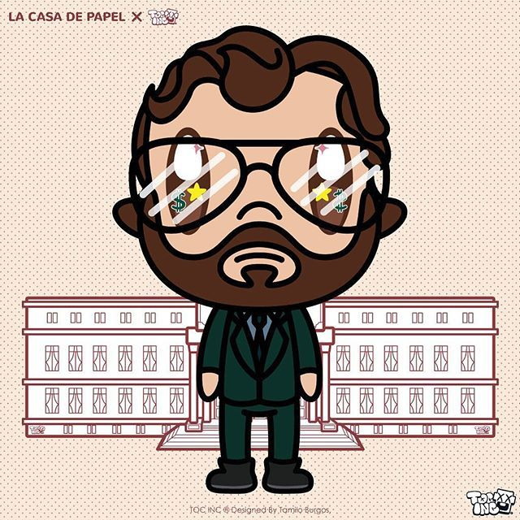
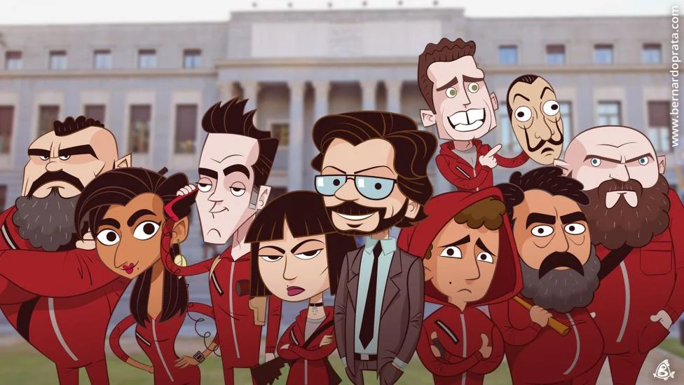

Galeria d'imatges

imatge 1.

imatge 2.

imatge3.
La millor serie de robatoris!
La Casa de Papel és una sèrie espanyola que ha aconseguit un gran èxit a nivell mundial. La trama segueix un grup de delinqüents que intenten dur a terme el robatori més gran de la història a la Fàbrica Nacional de Moneda i Timbre a Madrid.
La banda liderada pel misteriós "Professor" es prepara per a l'assalt a la Fàbrica Nacional de Moneda i Timbre. Els delinqüents són coneguts per utilitzar noms de ciutats per mantenir la seva identitat en secret. Els membres inclouen el Tokio, l'expert en informàtica Nairobi, el Denver, el Moscou, el Rio, l'Helsinki i el Oslo.
El Professor té un pla detallat per portar a terme el robatori i la banda passa diversos mesos planificant i entrenant-se per a l'operació. Els delinqüents entren a la Fàbrica disfressats amb caretes del pintor espanyol Salvador Dalí i comencen a imprimir diners. El seu objectiu és mantenir-se dins de la Fàbrica durant onze dies per imprimir tot el que necessiten i després escapar sense ser detectats. Durant l'operació, la banda s'enfronta a diversos obstacles, incloent l'arribada d'unes tropes d'elit de la policia i la pèrdua de comunicació amb l'exterior. A més a més, els delinqüents desenvolupen relacions entre ells, alguns romàntiques i altres conflictives, que afecten la seva capacitat per mantenir-se concentrats en l'objectiu. La sèrie manté al públic en tensió mentre la banda intenta portar a terme el robatori sense ser atrapada, mentre que la policia lluita per trobar la manera d'entrar a la Fàbrica i acabar amb la situació.
La Casa de Papel és una història emocionant que manté als espectadors enganxats des del principi fins al final.La Casa de Papel és una sèrie de televisió espanyola que consta de 5 temporades. La trama segueix a un grup de lladres que planegen i executen un elaborat atracament a la Fàbrica Nacional de Moneda i Timbre d'Espanya, mentre mantenen com a rehenes als treballadors dins de la fàbrica. A mesura que avança la sèrie, s'aprofundeix en les històries personals dels personatges i en les conseqüències de les seves accions. Les temporades 1 a 4 se centren en l'atracament a la Fàbrica Nacional de Moneda i Timbre, mentre que la temporada 5 és una continuació que segueix les conseqüències de l'atracament.
imatge 1.
imatge 2.
imatge3.
Some representative placeholder content for the first slide of the carousel.
Some representative placeholder content for the second slide of the carousel.
Some representative placeholder content for the third slide of this carousel.